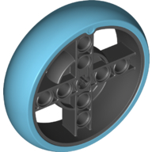

spikedev.wheel¶
A module for classes related to wheels and rims
Example¶
A scenario where a Wheel class would be used is when the user needs their
robot to drive for a specific distance. That calculation requires the circumference
of the wheel of the robot.
from spikedev.wheel import SpikeWheel
tire = SpikeWheel()
# calculate the number of rotations needed to travel forward 500mm
rotations_for_500mm = 500 / tire.circumference_mm
Classes¶
-
class
spikedev.wheel.Wheel(diameter_mm, width_mm)¶ Bases:
objectA base class for various types of wheels, tires, etc. All units are in mm.
- Parameters
diameter_mm (int) – the wheel’s diameter in millimeters
width_mm (int) – the wheel’s width in millimeters
-
class
spikedev.wheel.SpikeWheel¶ Bases:
spikedev.wheel.Wheel56mm

-
class
spikedev.wheel.SpikeLargeWheel¶ Bases:
spikedev.wheel.Wheel88mm